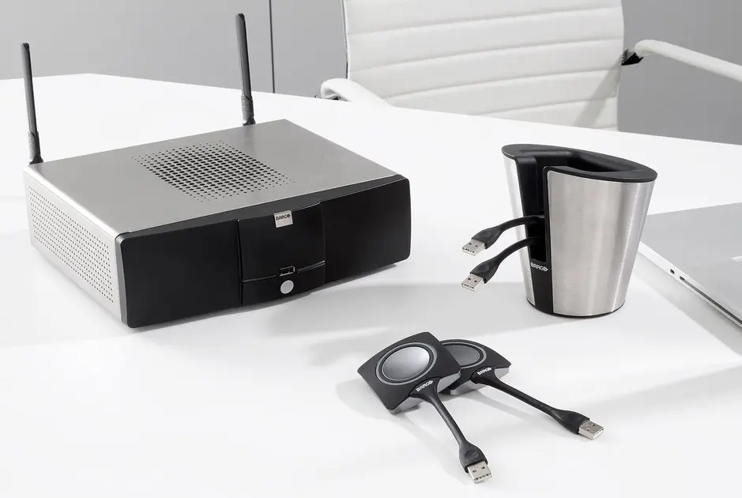

Введение

Под системами совместной работы (BYOD) понимают аппаратное решение, позволяющее группе людей одновременно взаимодействовать между собой в рамках решения той или иной задачи. Участники мероприятия с помощью своих собственных устройств, будь это его личный ноутбук, планшет или даже смартфон, могут рецензировать и комментировать материалы, демонстрируемые на общем экране и делиться друг с другом рабочей информацией. В состав системы входит по сути лишь единый блок управления, осуществляющий коммуникацию всех подключённых устройств. Соединение с блоком осуществляется по беспроводной связи с помощью интерактивной кнопки, подключенной по usb-интерфейсу, или с помощью специального приложения.
Основные особенности

Ключевой возможностью систем BYOD является принцип BYOD, что расшифровывается как Bring Your Own Device - Принеси свое собственное устройство. Чтобы понять все удобство BYOD применительно к совместной работе, достаточно вспомнить, как осуществлялся, к примеру, вывод контента участников на общий экран каких-то 5 лет назад: многочисленные «флешки», медленная синхронизация контента вручную или с использованием различных программных средств, сложности в подключении видеооборудования и так далее. С приходом концепции BYOD каждый участник совещания просто подключает по беспроводной сети собственное устройство – смартфон или планшетный ПК – и делится контентом с остальными участниками.
Безопасность
Первое, о чем нужно помнить – безопасность информации. Свободное подключение личных устройств к корпоративной сети создает потенциальную угрозу безопасности корпоративных данных. Что еще хуже – в случае утери пользователем своего гаджета, все данные из него, включая аутентификационные данные к корпоративной сети организации, окажутся в чужих руках. Решение состоит в разработке и грамотной реализации политик использования устройств в рамках принципа BYOD.
Совместимость
Аппаратные проблемы с совместимостью в системах BYOD отсутствуют – все основные моменты давно стандартизованы. Тем не менее, эксперты отмечают возникающие сложности при подключении разных устройств к системе. И это неудивительно: разнообразие устройств, операционных систем и их версий сегодня настолько широко, что ни один производитель не в состоянии обеспечить 200% поддержку всего этого «зоопарка».
Поддержка всех форматов контента
Несмотря на заявленную поддержку самых разных устройств – смартфонов, планшетов с разными операционными системами – сами мобильные устройства далеко не всегда демонстрируют безоговорочную готовность работать в связке с системами BYOD. Нередки ситуации, когда на Android передача видео поддерживается, а на iOS – нет. Таблица, хорошо читаемая на планшете, на экране смартфона может превратиться в месиво мелких цифр. В результате есть риск вызвать непонимание между участниками мероприятия, что существенно снизит эффективность коллаборации.
Назначение
Системы совместной работы на базе принципа BYOD являются вспомогательными. Их нежелательно рассматривать как основной (или вообще единственный) способ обмена контентом или коммуникации внутри компании. Системы BYOD не предназначены для использования в масштабных мероприятиях типа конференций, хотя некоторые производители и заявляют о таких возможностях. Дело в том, что в таких системах практически отсутствуют возможности администрирования и упорядочивания публикуемого контента, что в условиях конференции быстро превратит экран презентации в неуправляемый хаос.